译文｜Apple Watch「世界时间」表盘背后的历史
Apple Watch 发布之初众说纷纭，有人视之为一块外强中干、平平无奇的运动监测表，也有人觉得它能威胁整个瑞士制表业。无论你对 Apple Watch 抱有怎样的看法，有一点无法否认：发布七年来，Apple Watch 确实成了如今最具影响力的电子产品之一。和其他苹果产品一样，Apple Watch 的成功并非凭借某项人无我有的独门绝技，而是因为在设计、科技、用途、个性与历史传承间精心达成了平衡。而历史传承这一点，就是我们今天要探讨的主题。
苹果在每一代 Apple Watch 中不断加入新的软硬件功能，提高了智能手表的标准，也让 Apple Watch 用途越来越广。与此同时，苹果也从表壳材质、表带设计和表盘形制上投入不小，让 Apple Watch 同历史悠久的机械表似有一脉相承之感。今年早先，笔者 撰文介绍过 受真实机械表启发而创生的 Apple Watch 表盘，今天我们要探索的表盘——「世界时间」——亦属此类。
笔者第一眼见到「世界时间」的时候，就注意到了表盘上信息密度之高。相比之下，其他表盘外观上显然更为友好。比方说，「GMT」表盘就显然更为简洁直接，使用时也无需关注 GMT 组件是怎么工作的；而「世界时间」则一眼就让人觉得不简单。另外，这款表盘的的诞生史，与一样十分基础却又无比重要的事物有关——时区的划分。
世界时间诞生之前
世界时间表款的源头，要追溯到 1876 年的爱尔兰。加拿大籍苏格兰裔工程师、发明家桑德福德·弗莱明（Sandford Fleming）乘火车误了点，因为当时的洲际铁路运营简直就是一团乱麻，各站都有自己随意划定的时间1，人们出行只能自己频繁对表，如若不然，就会像弗莱明一样耽误换乘。为了解决这个问题，弗莱明提出，在全球通行统一的24小时计时制。当然他的这一构想并未实现，但其精髓则演变成了如今的世界时（universal time）。
1884 年 10 月 22 日举行的国际子午线会议（International Meridian Conference），将格林尼治皇家天文台的时间作为全球时间参考的新标准。这是因为大多数海图都将穿过该点的子午线定为本初子午线（prime meridian）。时区的确定则是以本初子午线为界，向东、向西均每 15 个经度划为一个时区。次年，弗莱明找到了瑞士著名钟表匠埃马纽埃尔·科捷（Emmanuel Cottier），请他制作一款能显示所有 24 个时区时间的新型机芯。埃马纽埃尔虽然着手做出了设计图，却未能将其付诸现实2。
Heures Universelles
尽管埃马纽埃尔最后没能造出「世界时间」表款，他的儿子路易（Louis Cottier）则继承了这项挑战。路易本人也是颇具才华的钟表匠，在多家瑞士顶级表行学徒，并屡次获奖。1931 年，路易发布了「Heures Universelles」，亦即法语的「世界时间」3。相比前人的构想，他的设计更为简单：表的中央是一块固定不动、配有标准时针和分针的刻度盘；外圈则是一个划分成一天 24 小时的圆环。圆环以时针一半的转速逆时针旋转，一天转一圈。要查看其他时区的时间，需要在静止刻度盘上找到该时区适应的城市，然后在 24 小时圆环上读出时刻。
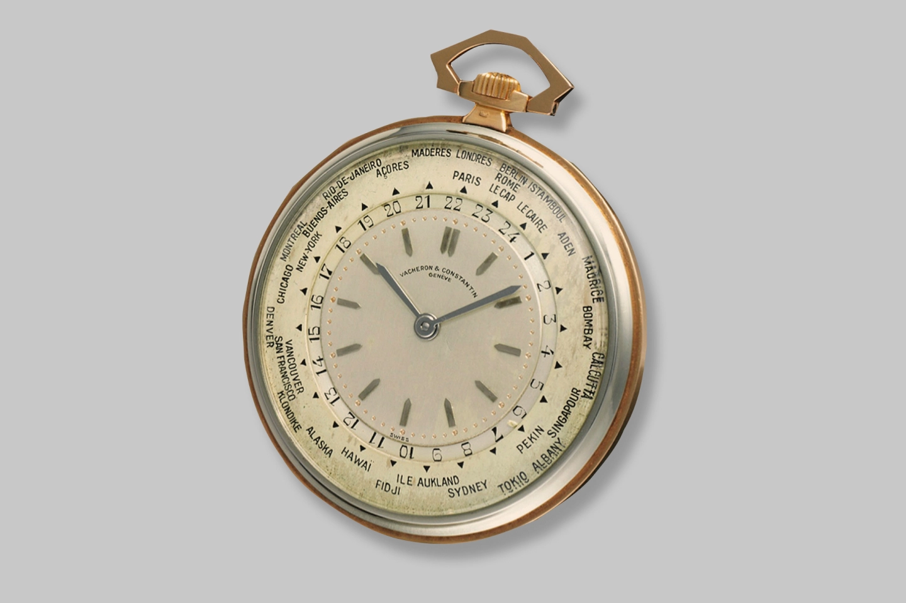
这一设计的一大缺点在于，印有各个城市的刻度盘是固定不动的。如果用户所在的时区发生了变化，就得找表匠旋转该刻度盘，让当前时区指向 12 点钟位置。此后数十年，科捷又为百达翡丽（Patek Philippe）、江诗丹顿（Vacheron Constantin）、劳力士（Rolex）等品牌开发了新的世界时间机芯。
第二个表冠与可调节性
1953 年，百达翡丽发布了内置科捷 Caliber 12-400 HU 机芯的 Reference 2523 世界时间4，在灵活性上做出了关键创新。原本印在静止刻度盘上的城市名，挪到了可动圆环上；9 点钟位置新增了第二枚表冠，用户无需求助于钟表匠，即可自行改变当前时区。
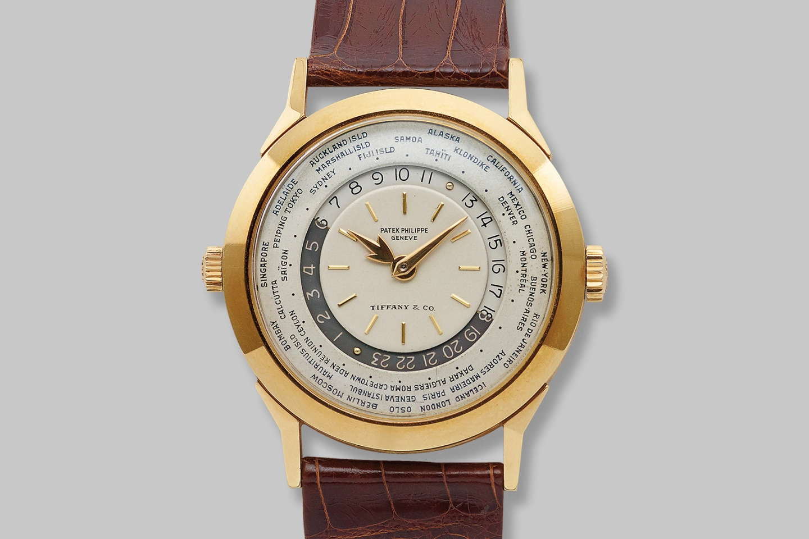
又过了近半个世纪，百达翡丽于 2000 年再次大幅更新了旗下的世界时间表款。新发布的 Reference 5110 将第二枚表冠改为一枚按销（pusher），每按动一次，城市圆环就向前转动一个时区5。如今，其他钟表品牌也采用了类似的按销机构。
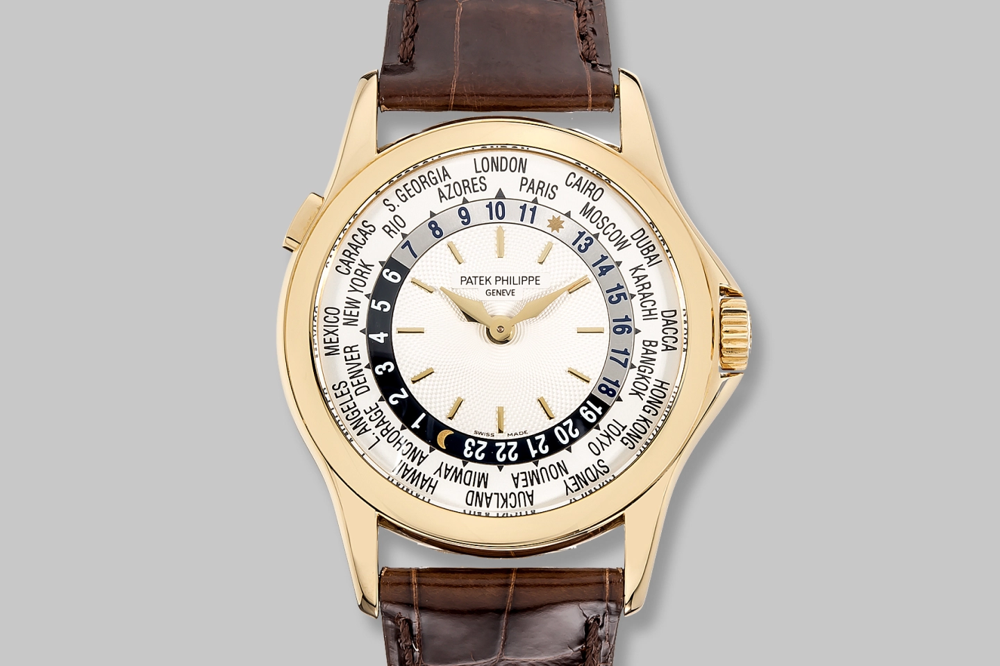
（世界）时间胶囊
世界时间表款的魅力，就在于它们以别样的方式，生动记录了手表制造的时代。数十年来，城市名称时有变化，时区分界也多次重绘。Justin Mastine-Frost 在 WatchBox 撰文写道：
Ceylon、Bombay 和 Calcutta 变成了 Sri Lanka、Mumbai 和 Kolkatta，褪去了原有的殖民色彩。也有些时区随时间进行了调整，例如葡属马德拉群岛（Madeira）如今和伦敦一样同属 GMT+16，澳大利亚阿德莱德（GMT+9.5）和悉尼（GMT+10）也只差半个小时。
可能有些人会认为，这是世界时间表款固有的问题。时区一旦改变，此前所有的世界时间手表便全部过时作废。但同时，正因如此，世界时间表款也成了记录人类历史的珍贵文物。城市刻度盘也能反映一些个性，比方说，德国的钟表匠可能就会在表盘上使用柏林标记时区，而非常用的巴黎。
世界时间在今天
Heures Universelles 诞生后的一个世纪里，钟表匠人们基于这同一个创想，打造了种类繁多的表款。许多表款都在当地时间刻度盘上，带了一幅以北极点为圆心的世界地图，但万宝龙（Montblanc）则另辟蹊径，推出了一款以南极点为圆心的手表。
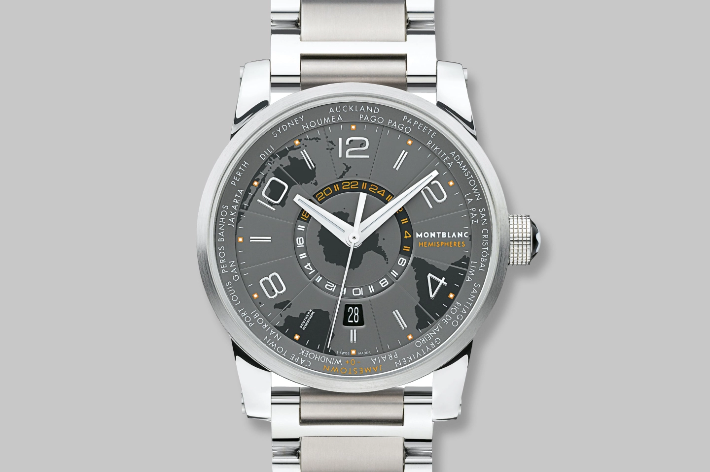
江诗丹顿和万宝龙又在地图这一点上进一步阐发，用多层表盘和旋转部件，给地图加上了晨昏变换的遮罩。
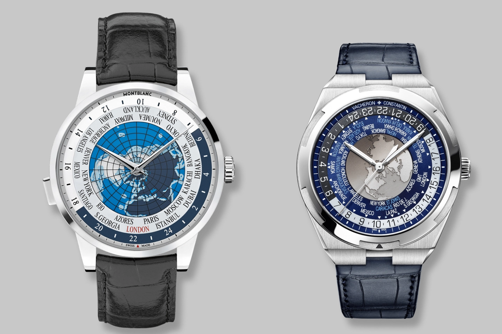
Nomos 从世界时间手表中吸取灵感，打造了精美的 Zürich 世界时间。虽然其刻度盘周围也有城市圆环，但不要想当然：由于该表没有 24 小时圆环，故其本质上是一块同时只能查看两个时区时间的 GMT 手表。
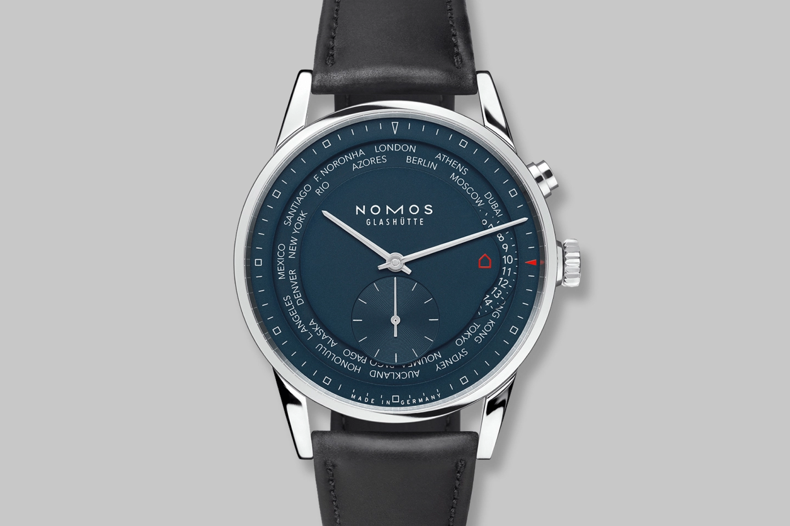
苹果的「世界时间」表盘
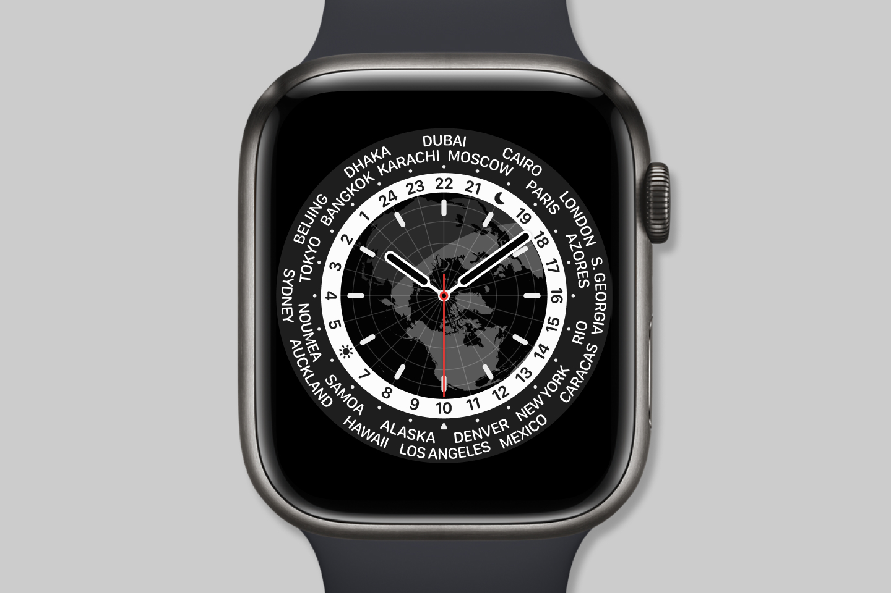
推出时间
watchOS 8（2021 年）
支持型号
Apple Watch SE、Apple Watch Series 3 及更新
和其他 Apple Watch 表盘一样，「世界时间」表盘从机械手表中获得灵感，同时加入了只有数码显示屏才能实现的各种功能。例如，Apple Watch 表盘上，所有文字的字头朝向都是正确的，而在机械表上，总有一半的城市名和数字是上下颠倒的。
与科捷原本的世界时间表款设计类似，「世界时间」表盘外沿也有一圈城市名称。虽然这个圆环看似静止不动，没有办法调节，但如果你前往其他时区，这个圆环就会自动旋转，将代表当前时区的城市对准 6 点钟方向，展现自己的动态本质。
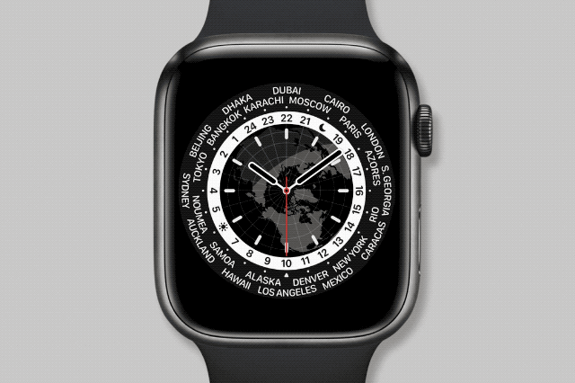
圆环向内便是每天逆时针转动一圈的 24 小时刻度环。一眼便可看出，这个刻度环与常规指针式表盘最大的区别，在于上面代表日出、日落的太阳、月亮图标。太阳、月亮图标在机械手表上固定不动，而在 Apple Watch 上，则会随着季节变化反映当时的日出、日落时间。当然，在显示更多信息的同时，这两个图标也遮住了两个时区的时刻，也算有得有失了。
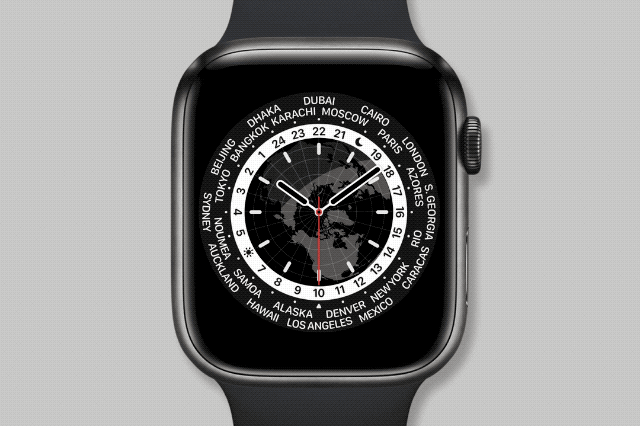
在 Apple Watch 上，这一点加上动态变化的时刻圆环，就让事情不好办了。由于夏令时的存在，相邻的时区在一年里会出现时刻相同的情况。撰文时，巴黎与开罗、奥克兰与萨摩亚、纽约与加拉加斯的时刻就是相同的7。
在时刻圆环内部，就是地图和当地时间刻度盘，有两种形式，分别是带时、分、秒针的指针式，和用数字显示时、分，并用表盘一周的小点动画表示秒的数字式。
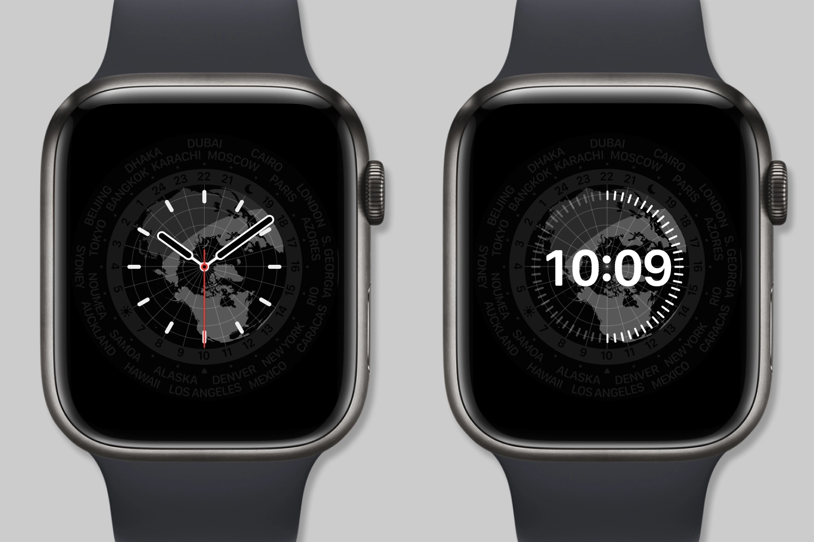
与前述的江诗丹顿和万宝龙表款一样，「世界时间」表盘也会显示地球上的黑夜和白昼。但与机械手表用一条直线简化表示晨昏线不同，Apple Watch 上的世界地图显示的则是真实的晨昏曲线。你可能还注意到，这幅地图也遵循传统，以北极点为圆心，所以对于生活在南半球的人来说，并没有以南极点为圆心的地区，确实比较可惜。但好的一方面是，苹果在这幅地图上依然藏了个小彩蛋。如果轻点表盘，地球就会转动起来，以你当前位置所对应的城市为圆心。对有些人来说，这可能就是个点缀，但笔者看来，这算是提醒我，我手腕上的不仅仅是一块手表，而是蕴含着科技的造物。
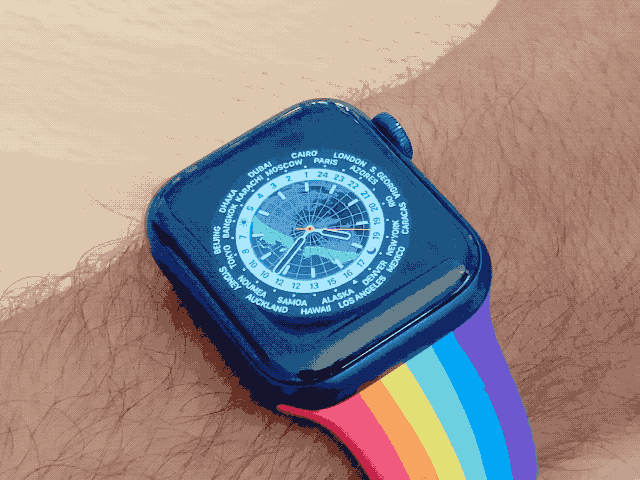
展望未来
「世界时间」的推出，标志着苹果将又一款传统名表设计带进了 Apple Watch 的表盘大家族。这批表盘里，每一款都兼具部分定制功能，以及与传统机械手表千丝万缕的联系。研究表盘中的各种细节、发现里面暗藏的各种彩蛋，实在是笔者的一大乐趣。但笔者想问，之后呢？或许我们能见到星座表盘、星盘表盘，甚至是 24 小时表盘也说不定。但笔者坚信，无论未来如何，一定只会更好。
- 1.The History of the World as told by World Time Watches，Deployant ↩
- 2.A guide to: the World Time Complication，David Duggan ↩
- 3.A guide to: the World Time Complication，David Duggan ↩
- 4.The History Of Patek Philippe World Timers，WatchBox ↩
- 5.The History Of Patek Philippe World Timers，WatchBox ↩
- 6.考虑夏令时。——译者注 ↩
- 7.如果相邻两地时刻相同，又有一地被遮挡，表本来的作用就派不上了。——译者注 ↩
译文｜Apple Watch「世界时间」表盘背后的历史
http://harveyjanson.github.io/2021/12/08/2021-12-08-apple-watch-world-time-face/